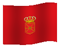
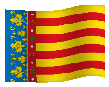
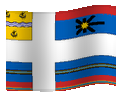
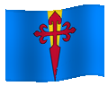
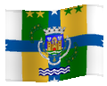

AsturiasCantabriaComunidad de MadridRegión de Murcia

Navarra

Comunidad ValencianaLa RiojaCeutaMelillaGreat LondonNorth West (ENG)West Midlands (ENG)Yorkshire And The HumberEast Midlands (ENG)South East (ENG)North East (ENG)South West (ENG)East of EnglandWest Central ScotlandSouthern ScotlandNorth Eastern Scotland

Highlands and Islands (SCO)Eastern Scotland

Área Metropolitana de LisboaCentro (POR)

Norte (POR)AlgarveAlentejoLeinsterUnited UlsterMunsterConnachtWest Wales and the ValleysEast WalesAbruzzoBasilicataCalabriaCampaniaEmilia-RomagnaFriuli-Venezia GiuliaLazioLiguriaLombardyMarcheMolise